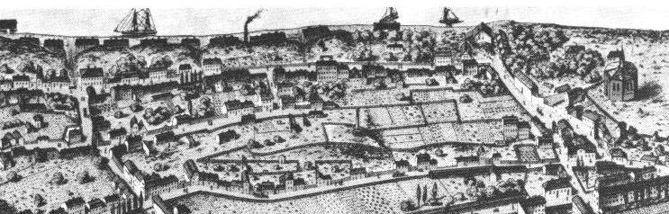
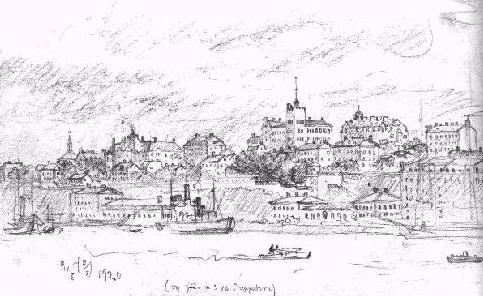
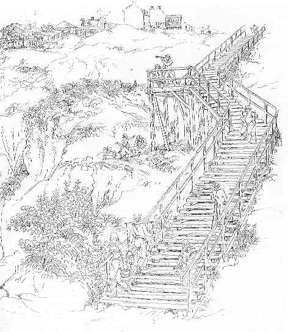
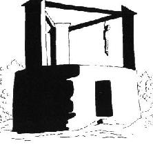
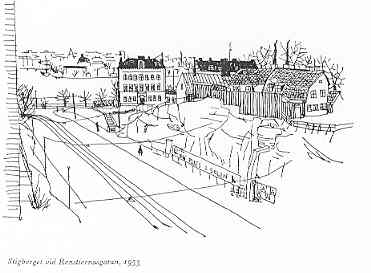
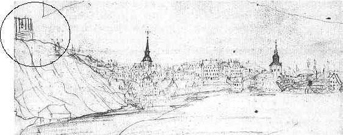
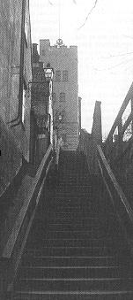

Södermalm i tid och rum
Stigberget
av Per-Anders Fogelström

Nedanför Katarinaberget, Stigberget och Erstaklippan ligger Stadsgården. I dag är det ett intensivt område för biltrafik och sjöfart.
Redan bilder från 1580-talet visar vågbrytare, bryggor och skepp i bukten närmast Södermalmstorg. När Erik Dahlberg i slutet av 1680-talet ritade sina stockholmsbilder var Stadsgårdsområdet bebyggt med höga magasinslängor och smala träkajer. Vid Södermalmstorg var hamnområdet brett - här låg Järngraven och här hade de ryska handelsmännens skepp sina kajplatser. Men längre bort mot Tegelviken smalnade kajerna, på vissa ställen var de bara några meter breda.
|
 |
Vid slutet av 1600-talet uppmanades söderborna att lämpa sitt avfall vid Stadsgården, dels av hygieniska skäl dels för att underlätta utbyggnaden av kajområdet. Vid den här tiden började man också bygga de första trätrapporna uppför de branta bergssidorna för att lättare kunna nå bebyggelserna på de södra bergen.
Under 1700-talet fortsatte expansionen av Stadsgården och området behöll i stort sett sitt utseende tills den stora omdaningen började omkring 1875.
|
 |
De långa och branta trapporna utefter bergväggarna blev så småningom rätt många, nästan ett tiotal. Alla hade de typiska, ibland fantasieggande namn som t.ex. Lokattens trappor, Ruthens trappor, Söderbergs trappor och Sista styverns trappor. Uppför de med tiden murkna och förfallna trätrapporna knegade uttröttade sjåare och hamnarbetare för att leta sig hem till usla bostäder i skjul och hyreskaserner bland södra bergen. Samma väg fick också de mer burgna i husen vid Fjällgatan ta sig fram. Men bilden förändrades. Den nya och utbyggda Stadsgården började anläggas 1875. Det branta Stigberget med i terrasser anlagda trädgårdar sprängdes ut. Arbetet fortsatte under 1900-talets första årtionde fram till Tegelviken. Nästan alla trapporna försvann och i deras ställe kom Stadsgårdshissen som var i drift från 1907 till 1971. Kuren på hissens topp är i dag konstnärsateljé.
|
År 1723 härjades stora delar av Södermalm av en väldig eldsvåda. Branden började i en kvarn nära Maria kyrka och fördes av den hårda vinden öster ut. Större delen av östra Söder brändes av, mer än 500 hus blev lågornas rov. Katarina kyrka skadades svårt liksom varvet vid Tegelviken. För att skona malmarna från de förhärjande bränderna stadgades det i Stockholms första byggnadsordning från 1725 att endast stenhus fick uppföras vid torg, stora gator och hamnar. Från 1736 blev det helt förbjudet att bygga trähus - ett förbud som inte alltid efterföljdes i de så kallade utmarkerna vid Vita Bergen, Stigberget och Åsöberget.
Utbyggnaden och omdaningen av Stadsgårdsområdet är en ständigt pågående process. Ännu i våra dagar aktualiseras omdiskuterade utbyggnader för att tillfredsställa sjöfartens krav.
|
Det äldsta namnet på Stigberget är Galgberget. Här låg under 1500- och 1600-talet en av stadens avrättningsplatser. På äldre bilder syns den karakteristiska silhuetten av den höga galgen på det för övrigt kala och obebyggda berget. Galgen var byggd av sten med en triangelformad sten- och träöverbyggnad. Överst hängdes de värsta missdådarna och de fick hänga kvar länge - andra till varning och eftertanke. Kvartersnamnet Justitia bevarar minnet av avrättningsplatsen.
|
 |
|
 |
Stigbergsområdet började bebyggas under 1600-talet. Den bebyggelse som nu finns är i huvudsak uppförd efter den stora branden 1723. Östra delen av Stigberget brukar kallas Erstaklippan. Just där Katarinavägen byter namn till Renstiernas gata ligger Stadsgårdshissen. Den 25 meter höga hissen var i bruk från 1907 till 1971. Här börjar Fjällgatan. På den norra sidan sänkte sig tomterna förr brant ner till Stadsgården. På gatans södra sida, från branten av Renstiernas gata fram till Ersta sjukhus, bildar husen ett karaktäristiskt stadsparti med 1700-talshus av trä och sten. Sista styverns trappor leder upp till Stigbergsgatan. Till höger i trapporna ligger en liten trädgård med blommor och kryddväxter. Några meter österut vid Stigbergsgatan finns Anna Lindhagens lusthus. Trädgården och lusthuset sköts om av Katarina-Sofia stadsdelsnämnd. Följ Stigbergsgatan västerut och se på de karaktäristiska trähusen från 1700-talets första hälft. Här ligger vid nr 21 Blockmakarens hus, en filial till Stockholms stadsmuseum. Mamsell Josabeths trappor leder ner till Renstiernas gata. |
Omkring år 1500 hade stadsdelen Södermalm börjat bli så stor att bebyggelsen närmade sig galgberget på Pelarbacken. Galgen måste flyttas ännu längre ut.
Exakt när flyttningen skedde vet man inte, men på den äldsta realistiska målning av Stockholm som finns bevarad - Vädersolstavlan från 1535 - reser sig galgen uppe på Stigberget. Den stod på bergets högsta punkt, där Navigationsskolan finns i dag.
Där var dess avskräckande siluett synlig över hela stan. På många sjökort från 1500- och 1600-talen var galgen inritad som sjömärke.

Kvartetet intill heter fortfarande Justitia efter det officiella namnet på galgbacken - Justitieplatsen. Förr, när Stigberget var så gott som obebyggt, var Justitia kvartersnamn för hela berget.
GALGEN FULLHÄNGD
De äldre galgarna vet vi inte hur de såg ut, men Stigbergets galge finns avbildad på flera teckningar och kartor. Den hade ett fundament av sten, byggt som ett lågt, runt torn. Ovanpå fundamentet reste sig tre stenpelare, förenade med grova träbjälkar vid vilka repen var fästade.
"Här höres av mycket ont, oavsett här nästan dagligen straffexempel för ögonen gives, vartill Södermalms galge vittne är, vilken så fullhängd är, att näppeligen mer där hängas kan, förrän några avfalla. Gud bevare oss!", skrev drottning Kristinas hovjunkare Johan Ekeblad i april 1653.
Förmodligen dinglade då nio kroppar i galgen. Året innan nämner Stockholms överståthållare Schering Rosenhane i en skrivelse att man i början av mars hängt nio personer samtidigt. Och då var galgen full.
VIDSKEPELSE OCH SVARTKONST
Avrättningsplatsen och bödeln omgavs av vidskepelse och tro på dunkla makter. Nästan allt som hade med avrättningar att göra ägde magisk kraft. Vid halshuggningar var det vanligt att åskådarna tog med sig små tomma kärl av olika slag. När hugget fallit, rusade man fram för att samla upp offrets blod. Det ansågs kunna bota diverse sjukdomar och alldeles särskilt fallandesjuka, det vill säga epilepsi. Starkast verkade medicinen om den intogs omedelbart.
På galgbacken växte den märkliga roten Alrunan. Den hade en människoliknande form, skulle plockas nattetid och kunde användas till olika svart konster. Under häxprocesserna i Katarina på 1670-talet, förekom ofta anklagelser om att trollkonorna rände på galgbacken om nätterna för att skaffa det ena eller andra till sina hemska riter.
År 1516 stod en kvinna i Stockholm inför rätta, anklagad för att ha stoppat en avhuggen hand från galgbacken i öltunnan. "Tjuvafingrar" gjorde ölet mustigare, trodde man.
Av en hängd tjuvs hand eller finger kunde man också tillverka ett så kallat tjuvljus. Med ett sådant kunde man lysa vid nattliga inbrott utan att någon vaknade.
STUPAGREVE, MÄSTERMAN, BÖDEL
Spikar från galgen eller från en hängd mans stövlar gav skydd mot ondska och sjukdomar. Och den som ville ha tur i spel skulle tillverka tärningar av benknotorna från en avrättad tjuv. Det sades att bödelssvärdet eller yxan, som hängde i bödelshuset, började skramla om någon missdådare steg in i stugan. Det borde ha hänt rätt ofta, eftersom det bara var stans slödder som umgicks med bödeln.
Han hade, möjligen med undantag för sin dräng rackaren, samhällets mest föraktade yrke. Stupagreve, mästerman och skarprättare kallades han också. Det var sällsynt att någon frivilligt tog tjänst som bödel. Ofta var han en dödsdömd som fick behålla livet mot att han tog tjänsten. Innan han tillträdde fick han öronen avskurna eller stadens märke inbränt på kroppen, för att han inte skulle kunna rymma.
DEN NYE HÄNGER DEN GAMLE
Ingen anständig människa ville ha något med bödeln att göra. På medel tiden måste han bära en särskild dräkt i klara färger, ofta röd, för att folk skulle se honom och hinna ur vägen. Han hade egen plats i kyrkan där ingen annan satte sig och eget glas på krogen som ingen annan drack ur. Det var inte ovanligt att bödeln slutade sina dagar genom att avrättas av sin efterträdare.
|
GALGBERGSGATAN
Fjällgatan med stans bästa utsikt och
sina vackra kulturhus, är idag en av
Stockholms mest älskade gator. För tre
hundra år sedan hette den Galgbergsgatan och var en ruskig plats som de
flesta stockholmare skydde som pesten. Då kantades den av pålar där avhuggna huvuden och styckade kroppar
satt uppspikade. På berget ovanför
stod galgen, där oftast några mer eller
mindre ruttnade lik svängde i vinden.
|

|
Mäster Mikael var Stigbergets mest kände bödel. Han hette Mikael Reisuer och tjänstgjorde som stadens mäs terman från 1635 till 1650. Hans hus låg i kvarteret norr om gatan som nu bär hans namn, troligen på den del av berget som sprängdes bort för att ge plats åt Katarinavägen.
På Mäster Mikaels tid var detta en utkant av stan och bortom bödelns stuga fanns bara det kala galgberget.
Mikael Reisuer tjänstgjorde som bödel i 15 år, vilket är ovanligt länge. Han var också ovanlig på det viset att han inte begått något brott som tvingat honom att ta jobbet. Han kom från Norrköping där han livnärt sig på att sälja bälten, häktor och andra småsaker. Förmodligen utan någon större framgång.
Den 3 februari 1635 trädde han i tjänst. Av en slump finns en skildring av hans allra första förrättning bevarad.
Författare är den franske legationssekreteraren Charles Ogier:
LANDETS EGENDOMLIGA HÅRDHET
En ohygglig nyfikenhet drev mig att följa efter tre olyckliga, som fördes till avrättning utanför staden. Den ena var en kvinna, som hade avlivat sitt barn. Då vi kommo till avrättsplatsen, där kvinnan skulle halshuggas, slöto drabanterna krets kring de olyckliga och förhindrade med utsträckta lansar folket att tränga på.
Var och en av de livdömda hade sin pastor eller själasörjare med, som med låg röst läste och sjöng böner med dem; därefter fick den olyckliga kvinnan befallning att falla på knä och lägga huvudet på stupstocken, där det föll efter ett yxhugg av skarprättaren. Liket lades oavklätt på bår; det anses nämligen orätt att den avrättades kläder vidröres av någon.
Sedan släpades de två männen brutalt bort till galgen, som var rest på ett högt berg, synlig för hela staden. Detta försiggick under stor tillströmning av folk, och utan att någon yttrade något medlidande, vilket är ett bevis på landets egen domliga hårdhet.
Tvärtom berättade våra tjänare, som på nära håll iakttogo detta sorgliga skådespel, att då en av dem som skulle hängas stretade emot och icke godvilligt lät binda sig, brusto de kringstående gång på gång i skratt, som om det vore en lustig fars de åsåge.
MIKAEL REISUERS DÖD
I mäster Mikaels sista framträdande på Stigberget var rollerna ombytta. Då fick han själv som dödsdömd för dråp vandra vägen upp på berget.
Den 31 januari hade han suttit i bödelsstugan och supit ihop med en landsstrykare vid namn Påwel Andersson, som tidigare förvisats från staden.
När de tömt en butelj brännvin blev det gräl om en gammal skuld för öl. Grälet fortsatte med slagsmål och efter en stund gick Mikael och hämtade ett svärd. Påwel drog kniv. Det hela slutade med att Påwel Andersson låg död på tröskeln till bödelns hus.
Den 20 mars 1650 föll Mikael Reisuers huvud på galgberget där han i femton år haft sin arbetsplats. Några år senare hade staden åter växt sig så stor att den började tränga alltför nära galgbacken. I slutet av 1600-talet måste den flyttas igen.